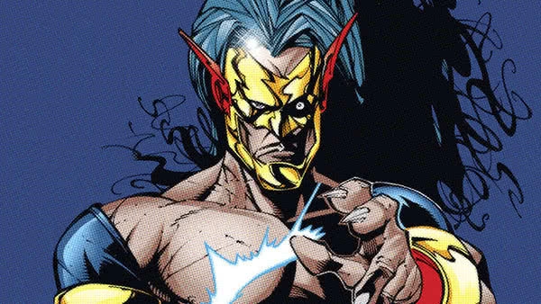
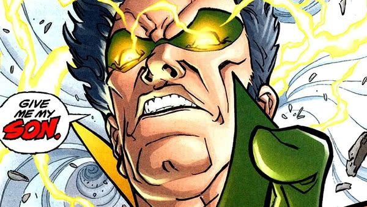

Eobard Thawne, o Flash Reverso, viajou no tempo para conhecer o Flash, mas descobriu que seria seu maior rival. Ele tentou apagar Barry Allen da história para se tornar o verdadeiro Flash e foi responsável pela morte da mãe de Barry.
Zoom é o maior inimigo de Wally West, tendo sido um aliado antes de se tornar um vilão obcecado em testar o Flash. Ele se tornou uma ameaça para a segurança do herói e seus entes queridos. Zoom também enfrentou Barry Allen em várias ocasiões.
O Flash Negro representa a morte para os velocistas, criado pela Força de Aceleração para alcançá-los. Embora não seja necessariamente um vilão, sua aparência macabra e zumbi o colocam em nossa lista de vilões do Flash.
|  | SavitarRegressamos de novos aos vilões velocistas do Flash! Apesar de ter sido o velocista mais rápido que o herói já enfrentou na série televisiva, Savitar era praticamente desconhecido até chegar à telinha. Mesmo após ter se tornado mais popular, a identidade real de Savitar nos quadrinhos continua sendo um mistério, a única coisa que se sabe sobre o velocista é que ele era um ex-soldado que combateu na Guerra Fria antes de ser jogado para o futuro. Nas HQs, Savitar não é tão rápido assim e suas habilidades são bem semelhantes às de muitos outros velocistas, no entanto isso não faz dele um adversário mais fácil de ultrapassar. |
Mago do TempoO Mago do Tempo foi o primeiro meta-humano que o Velocista Escarlate enfrentou na série televisiva, The Flash. Algo merecido, pois ele já enfrentou o Velocista Escarlate nas HQs por mais de 70 vezes! A lista de habilidades deste vilão é bastante impressionante, pois ele consegue controlar o estado atmosférico de todos os locais onde ele se encontra. Para além de conseguir tornar um dia de sol numa verdadeira tempestade, ele consegue controlar os elementos, como água, vento ou a eletricidade gerada por relâmpagos. Contudo este vilão tem um passado bem trágico, pois ele foi responsável pela morte do próprio irmão, um trauma que ele nunca conseguiu superar. |
 |